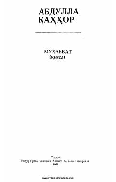

MAbdulla Qahhorning sevgi va insoniy kechinmalar haqidagi klassik qissasi.
Abdulla Qahhorning 'Muhabbat' qissasi insoniy his-tuyg'ular, sevgi va oilaviy munosabatlar haqida hikoya qiladi. Asarda og'ir kasallikka chalingan Murod Ali va uning atrofidagi odamlarning kechinmalari tasvirlanadi. Qissa 1988-yilda Toshkentda G'afur G'ulom nomidagi Adabiyot va san'at nashriyotida chop etilgan.